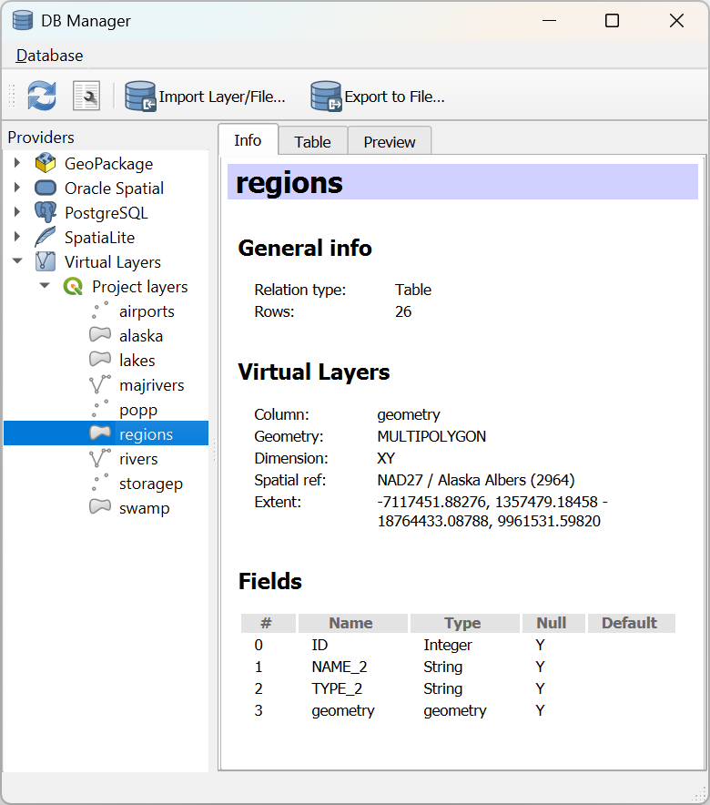
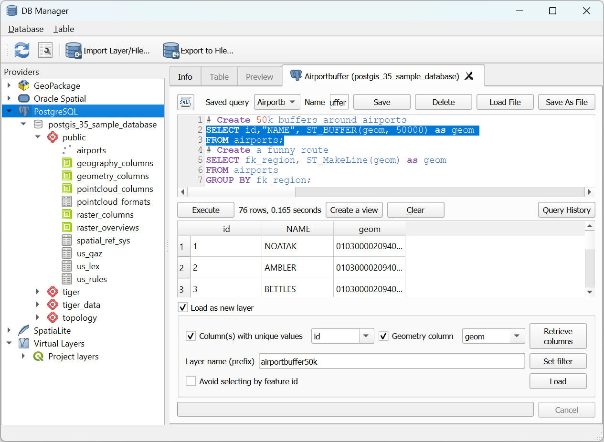
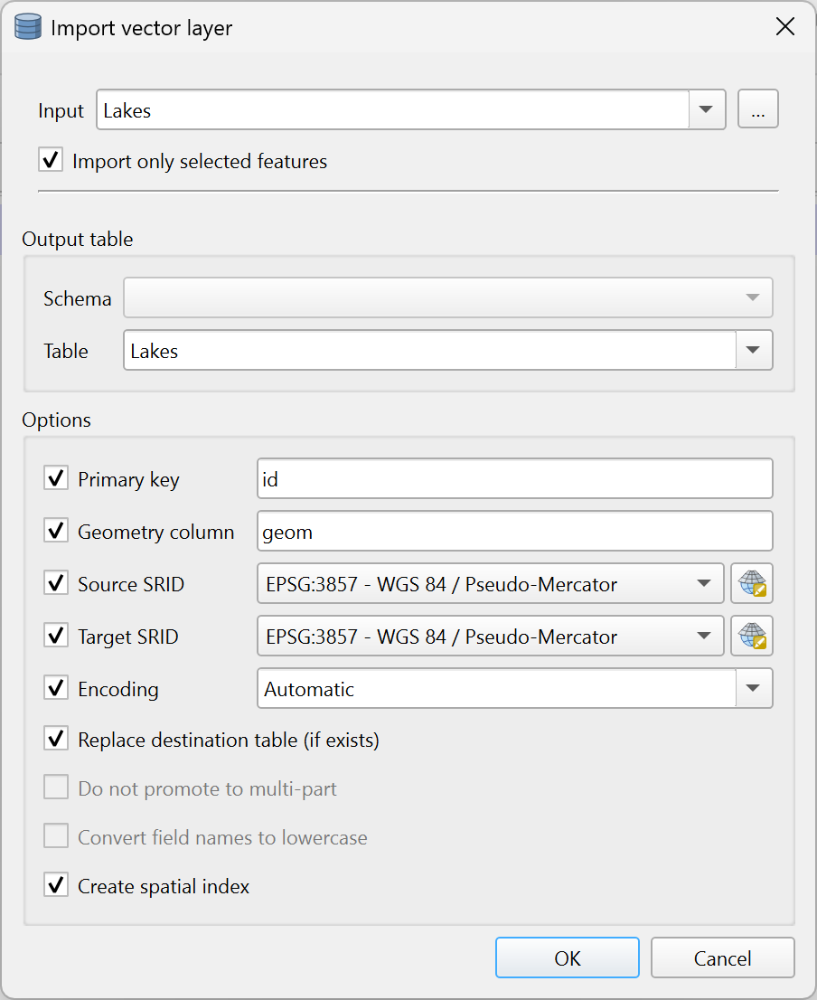
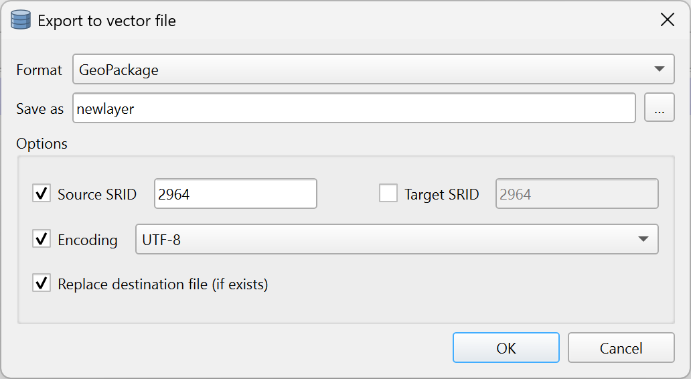

重要
翻訳は あなたが参加できる コミュニティの取り組みです。このページは現在 38.64% 翻訳されています。
25.2.1. DBマネージャプラグイン
The DB Manager Plugin is intended to be the main tool to integrate and
manage spatial database formats supported by QGIS (PostgreSQL, SpatiaLite,
GeoPackage, Oracle Spatial, Virtual layers) in one user interface.
The  DB Manager Plugin provides several features.
You can drag layers from the QGIS Browser into the DB Manager, and it
will import your layer into your spatial database.
You can drag and drop tables between spatial databases and they will
get imported.
DB Manager Plugin provides several features.
You can drag layers from the QGIS Browser into the DB Manager, and it
will import your layer into your spatial database.
You can drag and drop tables between spatial databases and they will
get imported.
{kind=link}

図 25.4 [DBマネージャ]ダイアログ
The menu allows you to connect to an existing database, to start the SQL window and to exit the DB Manager Plugin. Once you are connected to an existing database, the menus (relevant for DBMSs, such as PostgreSQL) and will appear.
メニューにはスキーマの作成と削除（空の場合のみ）、そしてトポロジが利用可能な場合（PostGISトポロジなど）は、 TopoViewer を起動するツールがあります。
メニューではテーブルの作成と編集、テーブルとビューの削除ができます。また、テーブルを空にしたり、スキーマ間でテーブルを移動することもできます。選択したテーブルに対して バキューム解析の実行 をすることができます。バキュームはスペースを回収して最良できるようにし、解析 はクエリの最も効率的な実行方法を決めるために使われる統計情報を更新します。*guilabel:変更ログ... では、テーブルに変更ログのサポートを追加することができます。最後に、 レイヤ/ファイルのインポート... と ファイルにエクスポート... ができます。
注釈
DB Managerを使うと、PostgreSQLデータベースのテーブルやカラムにコメントを追加することができます。
プロバイダ ウィンドウには、QGISでサポートされている既存のデータベースが一覧表示されます。ダブルクリックするとそのデータベースに接続できます。マウスの右ボタンで、既存のスキーマやテーブルの名前の変更と削除ができます。テーブルはコンテキストメニューでQGISキャンバスに追加することもできます。
データベースに接続されている場合、DBマネージャの メイン ウィンドウには4つのタブが表示されます。情報 タブはテーブルとそのジオメトリ、既存のフィールド、制約、インデックスに関する情報を提供します。選択したテーブルに空間インデックスを作成することができます。テーブル タブはテーブルを表示し、プレビュー タブはジオメトリをプレビューとしてレンダリングします。SQLウィンドウ を開くと、新しいタブが表示されます。
25.2.1.1. SQLウィンドウの操作
DBマネージャを使って空間データベースに対するSQL クエリが実行できます。クエリは保存と読み込みが可能で、 SQLクエリビルダ がクエリの作成を手助けしてくれます。新規レイヤとして読み込む にチェックを入れ、 一意な値を持つカラム (ID)、ジオメトリカラム、 レイヤ名(接頭辞) を指定することで、空間的な出力を表示することもできます。Ctrl+R を押すか、実行 ボタンをクリックすると、SQLの一部をハイライトしてその部分のみを実行することができます。
QGIS also adds support for the REGEXP function in some providers.
This allows users to use regular expressions in SQL filters or expressions, for example:
SELECT * FROM places WHERE name REGEXP '^A';
This returns all features where the name field starts with the letter A.
クエリを実行した後、結果セット内の特定のセルを選択できます。選択したセルをクリップボードにコピーするには、Ctrl+C ショートカットを使用します。コピーされたデータは書式付きテーブルとして利用できます。これにより、データを他のアプリケーションに貼り付けることができ、スプレッドシートなどではテーブルとして表示されます。
クエリ履歴 ボタンは、各データベースとプロバイダの直近20回のクエリを保存しています。
エントリをダブルクリックすると、その文字列がSQLウィンドウに追加されます。

図 25.5 DBマネージャのSQL ウィンドウで SQL クエリを実行する
注釈
SQL ウィンドウから仮想レイヤを作ることもできます。その場合はデータベースを選択する代わりに、SQL ウィンドウを開く前に 仮想レイヤ の下にある QGISレイヤ を選択します。使用する SQL 構文については 仮想レイヤを作成する を参照してください。
25.2.1.2. Import Vector Layer
You can import layer or file into your database. Here are the parameters you can set for the import process:
Input: Select the layer or file to import. Using the dropdown menu, select from the list of loaded layers in QGIS or click on the ... button to select a file from disk. Check the
 Import only selected features to import only the selected
features of the layer.
Import only selected features to import only the selected
features of the layer.Output table: Choose the Schema and provide a name for the new table.
Options: Here are some options for the import process:
- Primary key: Provide naming for the primary key field.
By default, it is named
id. - Geometry column: Provide naming for the geometry column.
By default, it is named
geom. - Source SRID: Define the SRID for the geometry column.
By default, it uses the layer's CRS.
- Target SRID: Define the target SRID to reproject the geometries
during the import process. By default, it uses the layer's CRS.
- Encoding: Define the encoding of the source data. By default, it uses
Automatic. It is QGIS's automatic detection mode that attempts to guess the file's character encoding based on available metadata or system locale. - Replace destination table (if exists): If a table with the same name already exists in the selected schema,
it will be replaced.
- Do not promote to multi-part: Geometries will be imported as single-part geometries.
- Convert field names to lower case: All field names will be converted to lower case.
- Create spatial index: A spatial index will be created on the geometry column after import.
- Comment: Add comments to table. Only available for PostgreSQL databases.
{kind=link}

図 25.6 Importing a vector layer into a spatial database using DB Manager
25.2.1.3. Export to Vector File
To export a table from your database to a vector file, select the desired Format and Save as location. Under Options, you can set the following parameters:
- Source SRID: Define the source SRID of the geometry column.
By default, it uses the layer's CRS.
- Target SRID: Define the target SRID to reproject the geometries
during the export process. By default, it uses the layer's CRS.
- Encoding: Define the encoding of the output data.
- Replace destination table (if exists): If a table with the same name already exists at the selected location,
it will be replaced.
{kind=link}

図 25.7 Exporting a table to a vector file using DB Manager